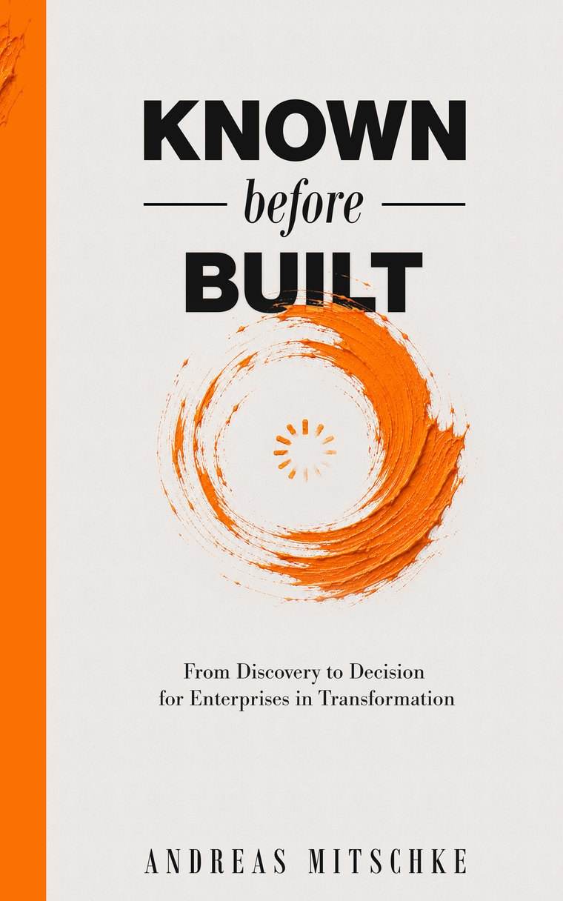
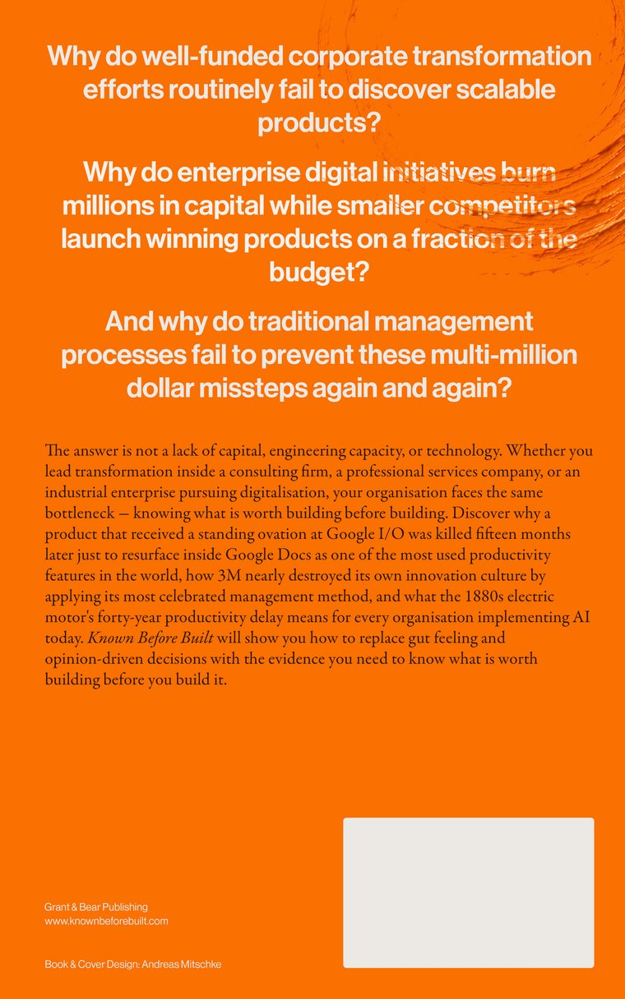

Inside organisations, I find out what is worth building, then design and operate the growth systems across product and marketing that turn that certainty into revenue. 15+ years in growth, marketing and product experimentation, in B2C and B2B tech, industrial and deep-tech organisations. Two bigger wins, many smaller wins, many failed bets, author of Known Before Built.
Every product decision I make starts with how real people actually use the product, not just in design. Since my teens I’ve instinctively designed interfaces to get users to their goal fast, not just to look good, with a little visual bliss on top. It started with logos and web interfaces for esports teams and early Flash interactions, moved through browser-game UIs and ended in HCD-led web and mobile app product design, always built on real behavioral data and aimed at a business metric. Research came first, the market and the person using it. Design was the foundation, growth and product became the career, and the principle never changed.
I speak engineering’s language from code to agile delivery, so product and growth decisions don’t get lost in translation. Design was a choice, code an unwanted trial by fire. Three years of object-oriented C++ at school led to a .NET Win XP tune-up tool coded by two friends and me, and to tutoring informatics master’s students while I was still on my own non-informatics curriculum. During the blogging era I built, grew, monetised and sold blogs, custom-made WordPress themes and widgets, running these first ventures on Kanban boards, with Scrum and Extreme Programming following over the years. I’ve never worked as an engineer, but I can read and understand a codebase, build product and growth experiments, and work eye to eye with engineering.
I’ve built ventures end to end, and learned most from what didn’t work. It started at 15 with web design services that grew into a two-person agency collaborating with a network of external partners, followed by a travel-experience platform. The one that taught me early on was born from a pain I felt first-hand as a student, a feedback aggregator for universities and academies. The users felt the value, but it was so new that procurement had no category for it, and every approval meant dozens of policy loops in already slow-moving universities. One of my first lessons in letting the market steer, and in how institutions actually decide. When a large company signed on as a paying pilot customer after a first conversation at an event, the venture pivoted to B2B. These are just a few of the experiences that led to methods like the "Pain-Gain Balance" for value proposition optimization and positioning, which form the intrapreneurial product innovation system in my book, Known Before Built. My journey was anything but straight, with plenty of failures, plenty of small wins, and two exits, stories better told in person.
I run innovation, growth marketing and product as one revenue system, and I’ve built every channel in it myself. My growth path began before Panda with technical SEO, experimenting with early black-hat methods and exploiting algorithm gaps to engineer organic search visibility at scale. One of those projects, scaled to over 100,000 monthly unique visitors in as early as 2010, before I sold it. That quantitative foundation evolved into full-funnel conversion rate optimisation, combining data analysis with my design background, and into organic social and content. As the teams and products I worked with matured toward scale, I expanded into paid acquisition, building performance marketing across paid social channels (pioneering the granular behavioral segmentation we all miss from power-seller) and search. Together, these form the core of my T-shaped profile, anchored by continuous product discovery, validation and rapid experimentation.
From doing the work to enabling others to do it themselves. Hands-on innovation, product discovery and growth work, leading teams and advising executives. Partnering with enterprise, scaleup and startup leaders to embed discovery frameworks and build growth systems that scale, across B2C and B2B tech, SaaS, industrial and deep-tech sectors.
Sourced, evaluated, and screened proprietary deal-flow of over 3,000 startups and matched the strongest ventures to funds in my network. Connected 15, of which all raised follow-on rounds. About three years for four funds across Europe, New York, and Silicon Valley, after a VC fellowship in New York. Accepted to VC Lab 2023.
And I stay on after the investment. Almost a dozen advisory seats so far, around half a dozen active right now, on growth and product, through 500 Global, Loyal VC and inbound referrals.
I’ve coached 20+ founding teams to test their ideas against real-world evidence, in Mannheim’s startup centres and beyond. Lean Startup, Knapp’s Design Sprint, Osterwalder’s Business Model and Value Proposition Canvas, Design Thinking. All useful tools, and all turn into innovation theatre unless you also teach people to get out of the building.
I teach professionals and students methods they can apply without me in the room. Entrepreneurship and innovation at universities in Mannheim, plus guest lectures on growth in Heidelberg and Karlsruhe. Leading a team works the same way. You make people more capable until they can do the work without you.
When I see something failing, I dig until I know why, before deciding what to change. Independent research, currently on why academic entrepreneurship education rarely produces entrepreneurs or measurably better ventures.
Nearly two decades of hard-won lessons, written down so others get the value without paying the same price. I wrote, designed and typeset Known Before Built myself, from 0 to 1. Research and writing weren’t new to me, I’ve been writing content since the blogging era as mentioned above. Making a book was something else entirely. It came with a crash course in everything a book needs beyond the words, from print production to typography, and I stumbled over more tripwires than I can count. I wrote it to share what I’d learned about corporate innovation, and writing a 300-page book that teaches without me in the room taught me more than I expected.
Don’t ask for opinions. Ask for behaviour.
"Opinions describe what people believe they would do. Behaviour shows what they did. Reported behaviour beats opinion, and observed behaviour beats both."
— from my book Known Before Built
They are the rock stars. You are their fan.
Customers, buyers and users are the experts on their own problems. We need to listen and observe to understand their reality to see what they can't see.
Research is the foundation of everything.
Know the market, the customers, the buyers and the users in depth. That is how you find the right product and also the channels to grow it.
Good ideas need safety to surface.
Teams often lack the safety to say the unpopular thing, regardless of hierarchy. Small units of five to seven, scaled through unit leads rather than bigger teams. That’s how I lead, and how I’d grow a department. In my experience, that’s how compliance theatre gets quieter and productivity goes up. I call these business-changing ideas that never surface "Trapped Capital". It’s also Chapter 1 of Known Before Built.
Hire for understanding, not recitation.
Processes can be taught. Skills can be honed. Intellectual honesty can’t. I look for people who understand a method well enough to know when not to use it.
Shared wins teach a little. Shared failures teach a lot.
Design, marketing, sales, growth, engineering and customer success learn faster when they’re aligned, and when the failures travel as freely as the successes. Most problems are system problems, not people problems, and the system needs to celebrate every lesson learned to be truly aligned. Alignment often doesn't follow the org chart. It follows the people others turn to for guidance, whatever their title. I call winning them over "Earning the right to operate", a section in Chapter 8 of Known Before Built.


From Discovery to Decision for Enterprises in Transformation.
An intrapreneurial operating system that replaces the innovation theatre of brainstorming sessions and Post-it-plastered whiteboards with evidence-driven discovery and validation methods, so the budget follows what customers actually do, not what the room believes they’ll love.
Speeches, panels, fireside chats, workshops, guest lectures and podcasts in English or German. I created and organised many event series long before I spoke at them, so I know what organisers need.